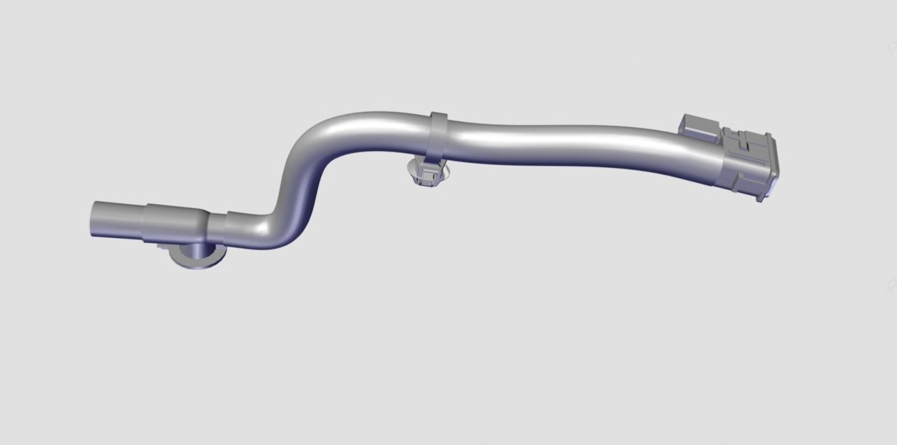

Служит для определения температуры в салоне, один конец подключен к Блок HVAC в сборе, а другой — к декоративной панели панели приборов; при работе вентилятора отопителя воздух затягивается блоком HVAC через решетку декоративной панели панели приборов для измерения температуры воздушного потока в салоне. Значение сопротивления между двумя выводами уменьшается с повышением температуры и увеличивается с понижением температуры окружающей среды.
Диапазон сопротивления при нормальной температуре (температура окружающей среды 10 - 25 °C): 4.2 KΩ ~ 2.1 KΩ